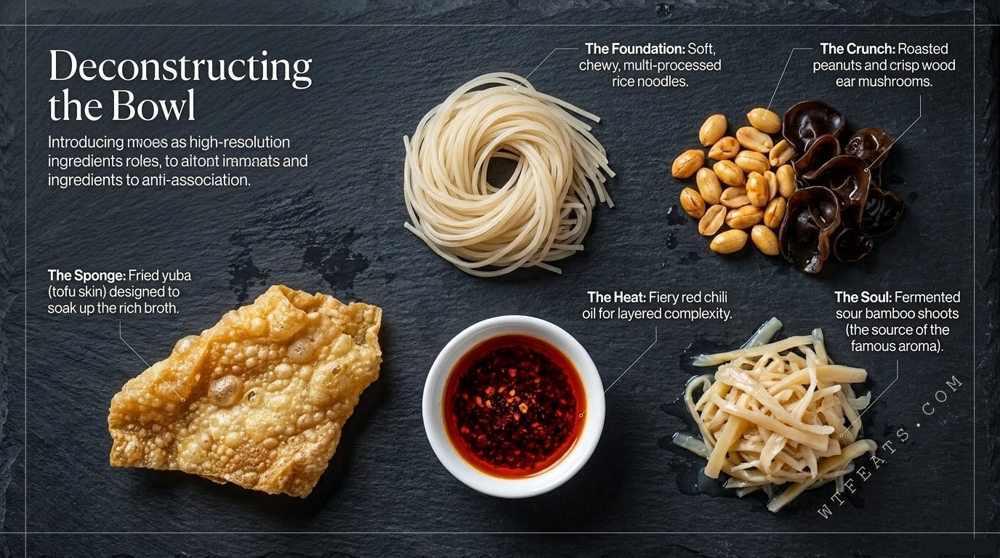

The Foundation

Start with noodles that can take a punch.
The foundation is soft, chewy, multi-processed rice noodles — built to stay springy in an aggressive broth. Around them, the crunch squad: roasted peanuts and crisp wood ear mushrooms, plus fried yuba, a sponge designed to soak up the rich broth.